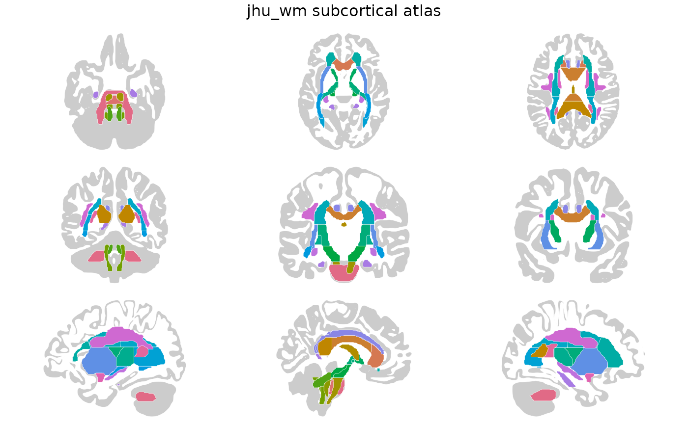

White matter label atlas derived from the ICBM DTI-81
probabilistic atlas of 81 normal subjects, with 48 regions
projected onto the FreeSurfer cvs_avg35_inMNI152 anatomical
grid for cortical-reference context and smoother boundaries.
Value
A ggseg.formats::ggseg_atlas object (subcortical).
References
Mori S, et al. (2005). MRI Atlas of Human White Matter. Elsevier. ISBN: 978-0444517418
Wakana S, et al. (2007). Reproducibility of quantitative tractography methods applied to cerebral white matter. NeuroImage, 36(3):630-644. doi:10.1016/j.neuroimage.2007.02.049
See also
Other ggseg_atlases:
jhu_tracts()
Other tract_atlases:
jhu_tracts()
Examples
jhu_wm()
#>
#> ── jhu_wm ggseg atlas ──────────────────────────────────────────────────────────
#> Type: subcortical
#> Regions: 27
#> Hemispheres: midline, right, left
#> Views: axial_inferior, axial_middle, axial_superior, coronal_anterior,
#> coronal_middle, coronal_posterior, sagittal_left, sagittal_mid, sagittal_right
#> Palette: ✔
#> Rendering: ✔ ggseg
#> ✔ ggseg3d (meshes)
#> ────────────────────────────────────────────────────────────────────────────────
#> hemi region label group
#> 1 midline middle cerebellar peduncle mcp brainstem
#> 2 midline pontine crossing tract pct brainstem
#> 3 midline genu of corpus callosum gcc commissure
#> 4 midline body of corpus callosum bcc commissure
#> 5 midline splenium of corpus callosum scc commissure
#> 6 midline fornix (column and body) fornix limbic
#> 7 right corticospinal tract rh_cst projection
#> 8 left corticospinal tract lh_cst projection
#> 9 right medial lemniscus rh_mlemn brainstem
#> 10 left medial lemniscus lh_mlemn brainstem
#> ... with 38 more rows
plot(jhu_wm())
